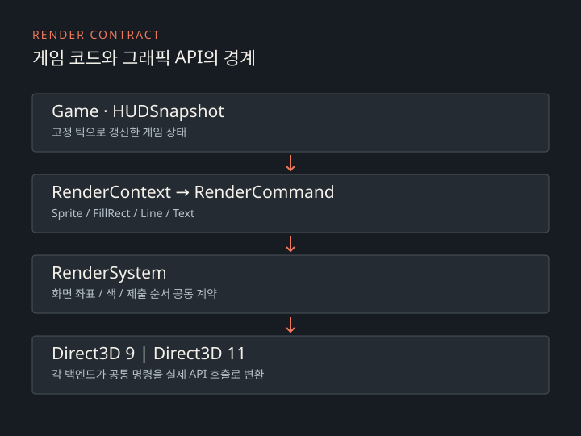

CASE 02 · GRAPHICS / GAMEPLAY
엔터 더 AC
Direct3D 9와 Direct3D 11을 지원하는 C++ 2D 액션 게임입니다. 렌더링, 충돌, 무기와 미션 시스템을 직접 구현했습니다.
DX9 · DX11 렌더링 비교

 DX11DX9
DX11DX9
메뉴 · 왼쪽 DX11 / 오른쪽 DX9
같은 미션의 DX9·DX11 화면입니다. 별도로 촬영해 캐릭터 위치와 동작 시점에는 차이가 있습니다.
게임 코드와 렌더러 분리
게임과 HUD가 직접 Direct3D를 호출하면 백엔드 교체가 장면 코드 수정으로 이어집니다. Sprite·FillRect·Line·Text 네 종류의 공통 명령을 두고 각 백엔드가 이를 처리하도록 했습니다.

충돌과 객체 수명
Collider를 상태 없는 기하 계층으로 두고 AABB, 원, 선분과 범위 판정을 공통 정의로 처리합니다. 게임 객체는 판정 대상을 선택하고 기하 연산은 Collider에 위임합니다.
장면·적·무기는 unique_ptr, 그래픽 리소스는 ComPtr로 관리합니다. 투사체는 비활성 슬롯을 재사용하고, CombatContext는 장면이 수명을 보장하는 객체를 연결합니다.
게임 루프
게임 로직은 60Hz 고정 틱으로 갱신합니다. 카메라와 화면 표현, 렌더 주기는 따로 처리해 화면을 그리는 속도가 전투 계산에 영향을 주지 않도록 했습니다.